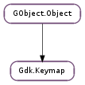

| static | get_default() |
| static | get_for_display(display) |
| add_virtual_modifiers(state) | |
| get_caps_lock_state() | |
| get_direction() | |
| get_entries_for_keycode(hardware_keycode) | |
| get_entries_for_keyval(keyval) | |
| get_modifier_mask(intent) | |
| get_modifier_state() | |
| get_num_lock_state() | |
| have_bidi_layouts() | |
| lookup_key(key) | |
| map_virtual_modifiers(state) | |
| translate_keyboard_state(hardware_keycode, state, group) |
None
| Name | Parameters | Return | Description |
|---|---|---|---|
| direction-changed | The ::direction-changed signal gets emitted when the direction of the keymap changes. | ||
| keys-changed | The ::keys-changed signal is emitted when the mapping represented by keymap changes. | ||
| state-changed | The ::state-changed signal is emitted when the state of the keyboard changes, e.g when Caps Lock is turned on or off. See Gdk.Keymap.get_caps_lock_state (). |
Bases: GObject.Object
A Gdk.Keymap defines the translation from keyboard state (including a hardware key, a modifier mask, and active keyboard group) to a keyval. This translation has two phases. The first phase is to determine the effective keyboard group and level for the keyboard state; the second phase is to look up the keycode/group/level triplet in the keymap and see what keyval it corresponds to.
| Returns: | the Gdk.Keymap attached to the default display. |
|---|---|
| Return type: | Gdk.Keymap |
Returns the Gdk.Keymap attached to the default display.
| Parameters: | display (Gdk.Display) – the Gdk.Display. |
|---|---|
| Returns: | the Gdk.Keymap attached to display. |
| Return type: | Gdk.Keymap |
Returns the Gdk.Keymap attached to display.
| Parameters: | state (Gdk.ModifierType) – pointer to the modifier mask to change |
|---|---|
| Return type: | state: Gdk.ModifierType |
Maps the non-virtual modifiers (i.e Mod2, Mod3, ...) which are set in state to the virtual modifiers (i.e. Super, Hyper and Meta) and set the corresponding bits in state.
GDK already does this before delivering key events, but for compatibility reasons, it only sets the first virtual modifier it finds, whereas this function sets all matching virtual modifiers.
This function is useful when matching key events against accelerators.
| Returns: | True if Caps Lock is on |
|---|---|
| Return type: | bool |
Returns whether the Caps Lock modifer is locked.
| Returns: | Pango.Direction.LTR or Pango.Direction.RTL if it can determine the direction. Pango.Direction.NEUTRAL otherwise. |
|---|---|
| Return type: | Pango.Direction |
Returns the direction of effective layout of the keymap.
| Parameters: | hardware_keycode (int) – a keycode |
|---|---|
| Returns: | True if there were any entries |
| Return type: | bool, keys: [Gdk.KeymapKey], keyvals: [int] |
Returns the keyvals bound to hardware_keycode. The Nth Gdk.KeymapKey in keys is bound to the Nth keyval in keyvals. Free the returned arrays with GLib.free (). When a keycode is pressed by the user, the keyval from this list of entries is selected by considering the effective keyboard group and level. See Gdk.Keymap.translate_keyboard_state ().
| Parameters: | keyval (int) – a keyval, such as %GDK_a, %GDK_Up, %GDK_Return, etc. |
|---|---|
| Returns: | True if keys were found and returned |
| Return type: | bool, keys: [Gdk.KeymapKey] |
Obtains a list of keycode/group/level combinations that will generate keyval. Groups and levels are two kinds of keyboard mode; in general, the level determines whether the top or bottom symbol on a key is used, and the group determines whether the left or right symbol is used. On US keyboards, the shift key changes the keyboard level, and there are no groups. A group switch key might convert a keyboard between Hebrew to English modes, for example. Gdk.EventKey contains a %group field that indicates the active keyboard group. The level is computed from the modifier mask. The returned array should be freed with GLib.free ().
| Parameters: | intent (Gdk.ModifierIntent) – the use case for the modifier mask |
|---|---|
| Returns: | the modifier mask used for intent. |
| Return type: | Gdk.ModifierType |
Returns the modifier mask the keymap ‘s windowing system backend uses for a particular purpose.
Note that this function always returns real hardware modifiers, not virtual ones (e.g. it will return Gdk.ModifierType.MOD1_MASK rather than Gdk.ModifierType.META_MASK if the backend maps MOD1 to META), so there are use cases where the return value of this function has to be transformed by Gdk.Keymap.add_virtual_modifiers () in order to contain the expected result.
| Returns: | the current modifier state. |
|---|---|
| Return type: | int |
Returns the current modifier state.
| Returns: | True if Num Lock is on |
|---|---|
| Return type: | bool |
Returns whether the Num Lock modifer is locked.
| Returns: | True if there are layouts in both directions, False otherwise |
|---|---|
| Return type: | bool |
Determines if keyboard layouts for both right-to-left and left-to-right languages are in use.
| Parameters: | key (Gdk.KeymapKey) – a Gdk.KeymapKey with keycode, group, and level initialized |
|---|---|
| Returns: | a keyval, or 0 if none was mapped to the given key |
| Return type: | int |
Looks up the keyval mapped to a keycode/group/level triplet. If no keyval is bound to key, returns 0. For normal user input, you want to use Gdk.Keymap.translate_keyboard_state () instead of this function, since the effective group/level may not be the same as the current keyboard state.
| Parameters: | state (Gdk.ModifierType) – pointer to the modifier state to map |
|---|---|
| Returns: | True if no virtual modifiers were mapped to the same non-virtual modifier. Note that False is also returned if a virtual modifier is mapped to a non-virtual modifier that was already set in state. |
| Return type: | bool, state: Gdk.ModifierType |
Maps the virtual modifiers (i.e. Super, Hyper and Meta) which are set in state to their non-virtual counterparts (i.e. Mod2, Mod3,...) and set the corresponding bits in state.
This function is useful when matching key events against accelerators.
| Parameters: |
|
|---|---|
| Returns: | True if there was a keyval bound to the keycode/state/group |
| Return type: | bool, keyval: int, effective_group: int, level: int, consumed_modifiers: Gdk.ModifierType |
Translates the contents of a Gdk.EventKey into a keyval, effective group, and level. Modifiers that affected the translation and are thus unavailable for application use are returned in consumed_modifiers. See for an explanation of groups and levels. The effective_group is the group that was actually used for the translation; some keys such as Enter are not affected by the active keyboard group. The level is derived from state. For convenience, Gdk.EventKey already contains the translated keyval, so this function isn’t as useful as you might think.
consumed_modifiers gives modifiers that should be masked out from state when comparing this key press to a hot key. For instance, on a US keyboard, the plus symbol is shifted, so when comparing a key press to a <Control>plus accelerator <Shift> should be masked out.
&sol* We want to ignore irrelevant modifiers like ScrollLock *&sol
&numdefine ALL_ACCELS_MASK (GDK_CONTROL_MASK | GDK_SHIFT_MASK | GDK_MOD1_MASK)
gdk_keymap_translate_keyboard_state (keymap, event->hardware_keycode,
event->state, event->group,
&keyval, NULL, NULL, &consumed);
if (keyval == GDK_PLUS &&
(event->state & ~consumed & ALL_ACCELS_MASK) == GDK_CONTROL_MASK)
&sol* Control was pressed *&sol
An older interpretation consumed_modifiers was that it contained all modifiers that might affect the translation of the key; this allowed accelerators to be stored with irrelevant consumed modifiers, by doing:
&sol* XXX Don't do this XXX *&sol
if (keyval == accel_keyval &&
(event->state & ~consumed & ALL_ACCELS_MASK) == (accel_mods & ~consumed))
&sol* Accelerator was pressed *&sol
However, this did not work if multi-modifier combinations were used in the keymap, since, for instance, <Control> would be masked out even if only <Control><Alt> was used in the keymap. To support this usage as well as well as possible, all single modifier combinations that could affect the key for any combination of modifiers will be returned in consumed_modifiers ; multi-modifier combinations are returned only when actually found in state. When you store accelerators, you should always store them with consumed modifiers removed. Store <Control>plus, not <Control><Shift>plus,